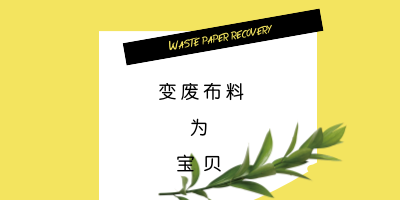

简介:
布料是装饰材料中常用的材料。包括有化纤地毯、无纺壁布、亚麻布、尼龙布、彩色胶布、法兰绒等各式布料。布料在装饰陈列中起到了相当的作用，常常是整个销售空间中不可忽视的主要力量。大量运用布料进行墙面面饰、隔断、以及背景处理，同样可以形成良好的商业空间展示风格 。
用途:
1、再次出售
废布头子回收来后，商家会进行分类整理，再转卖出手
2、重新利用
染整厂未处理完毕的，他们会重新缝头再去染厂统一染成深色的布;染整好的米数大一点的，会直接卖给人家做衣服裁片，米数小一点的会卖给人家做口袋布裁片;如果是很小的碎皮，化纤类的，会被卖去重新回炉纺丝，带天然棉麻类的，只能拿去绞碎开花，做成毡毯之类的织物